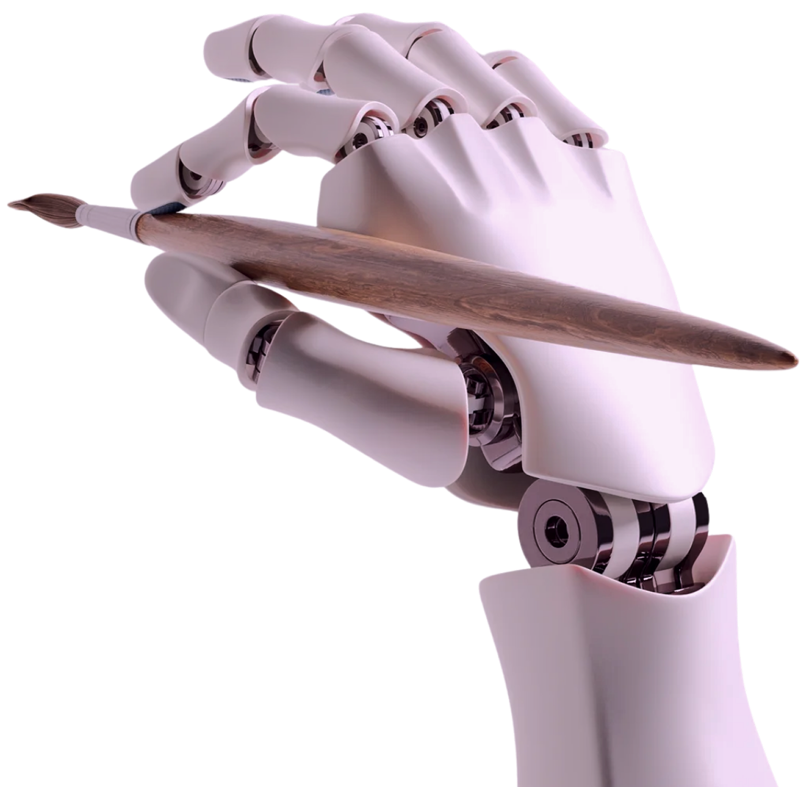

Un viaje por las disputas legales del arte digital y su nuevo mapa laboral

Esta experiencia recorre el impacto de la generación de imágenes con inteligencia artificial en el diseño y el arte digital, a través de dos ejes: las demandas judiciales que enfrentan las empresas de IA por el uso no autorizado de obras, y las consecuencias reales para el trabajo de ilustradores, diseñadores y modeladores 3D.
Demandas por derechos de autor
La IA generativa requiere billones de obras humanas para entrenarse; Esto dio inicio a la batalla judicial más grande de la era digital sobre propiedad intelectual
Enero 2023: Andersen vs Stability AI
v
Enero 2023: Getty Images vs Stability AI
v
Febrero 2023: Caso Zarya of the Dawn
v
Abril 2025: Efecto Ghibli de ChatGPT
v
Junio 2025: Disney-Universal vs Midjourney
v
Actualidad
v
Impacto laboral
Las herramientas de IA generativa expandieron la producción, la oferta y las ventas del mercado de imágenes stock; pero ese crecimiento convive con la lenta salida de productores que no usan IA:
+78%
Total de imágenes publicadas en la plataforma, con y sin IA
+88%
Productores activos que usan y no usan IA
-23%
Artistas activos que no usan IA en sus publicaciones
+39%
Ventas totales pese a la caída del contenido sin IA
En paralelo, otro estudio analizó más de un millón de publicaciones de trabajo en una plataforma freelance global, y registró menos publicaciones de trabajo en diseño gráfico y modelado 3D tras la llegada de las IA generadoras de imágenes:
-18%
Diseño gráfico
-16%
Modelado 3D
De los 6.844 ilustradores del Reino Unido que respondieron la encuesta de la Association of Illustrators en 2025, un tercio ya sufre pérdidas económicas:

32%
perdió comisiones por alternativas de IA
— pérdida promedio: £9.262 por artista afectado
Pero para conseguir esos encargos, primero necesitan estar expuestos online: